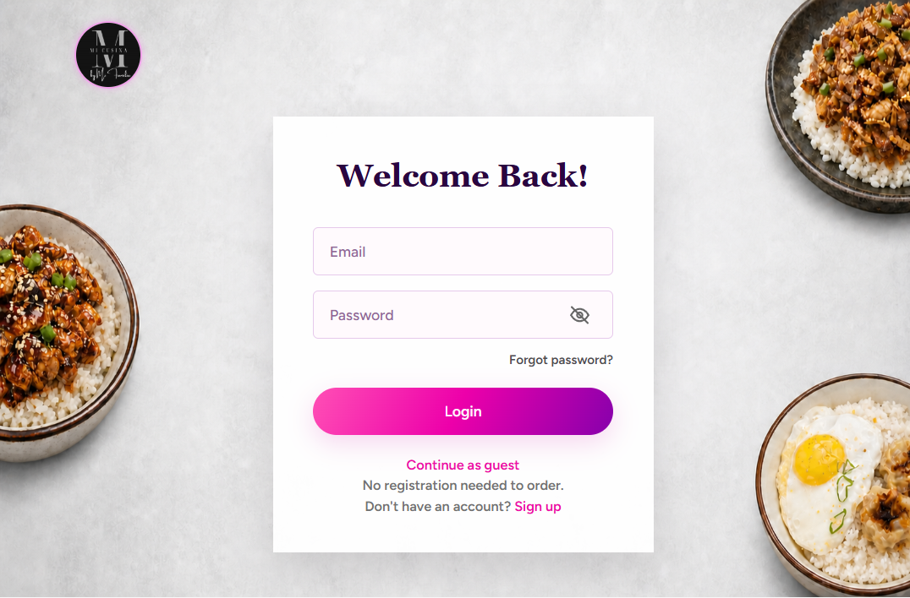
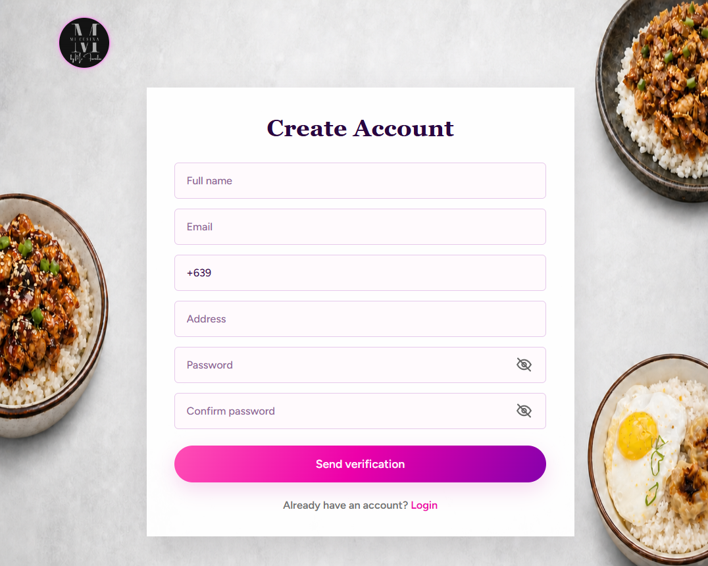
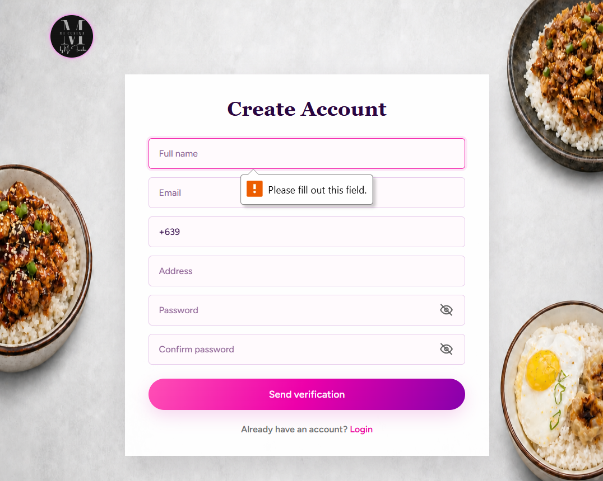

Password handling and login throttling
Passwords are hashed. Login attempts are limited to five per minute; this makes exposed password data harder to use and slows brute-force guessing.
Mi Cusina · What each safeguard does, why it matters, and visual evidence from the app
Passwords are hashed. Login attempts are limited to five per minute; this makes exposed password data harder to use and slows brute-force guessing.
Registration validates the submitted details and requires a six-digit email code that expires after ten minutes. This helps verify email ownership before account creation.
Web and mobile sign-in support authenticator codes and recovery codes. A password alone is insufficient when 2FA is enabled, reducing account takeover risk.
Protected API routes require authentication; customer records and staff/rider operations are checked against ownership and role. This helps prevent access to another user’s data or restricted actions.
Admin-only audit logs record the actor, event, changed record, allowlisted before/after values, IP, and time, without credentials or payment secrets. CSRF, security headers, private caching, signed payment returns, and timestamped HMAC checks help limit forged actions and fake payments.
The Kotlin app defaults to HTTPS, blocks cleartext traffic in its main configuration, and excludes app data from backup/device transfer. Its DataStore token is app-private but is not encrypted at rest.


